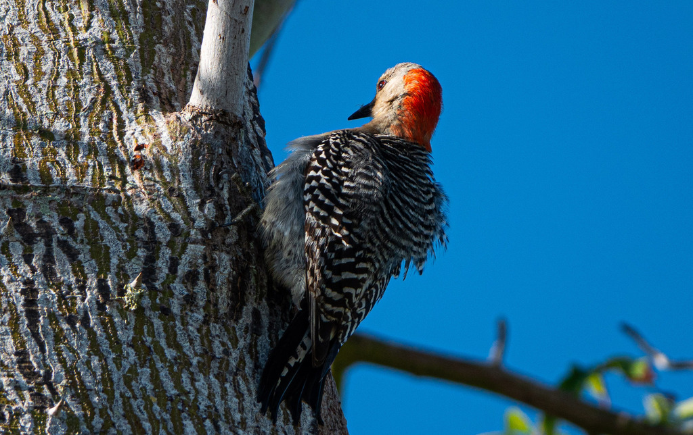

- Despite the name, the red belly is just a faint blush you rarely see — what catches your eye is the vivid red cap running from bill to nape on the male.
- It is one of Florida's most common woodpeckers, turning up in parks, yards, and woodlands alike.
- It wedges nuts and seeds into bark crevices to hold them steady while hammering them open — a built-in vise.
- Its long, barbed tongue can extend nearly two inches past the tip of its bill to extract insects from deep inside wood.
Bold red stripe from bill to nape (male) or just on the nape (female). Black-and-white barred back.
Faint pinkish wash — rarely visible in the field despite the name.
About 9 inches, roughly robin-sized.
A rolling 'churr' call and steady drumming on wood.
A rolling, somewhat nasal 'churr-churr-churr' and steady drumming. One of the more vocal woodpeckers.
A medium woodpecker with a barred black-and-white back and a red cap, hitching up a trunk or clinging to a branch. Listen for the distinctive rolling call.
Insects, spiders, seeds, nuts, fruit, and occasionally small vertebrates. Wedges food into bark crevices to hold it while eating.
Listen for drumming and the rolling call; scan tree trunks and larger branches in the canopy.
Year-round resident, active by day in every season.
Observe and enjoy.


- © Rob Carr (CC-BY-NC), via iNaturalist